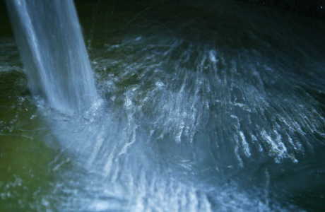
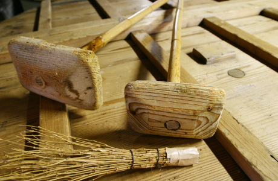
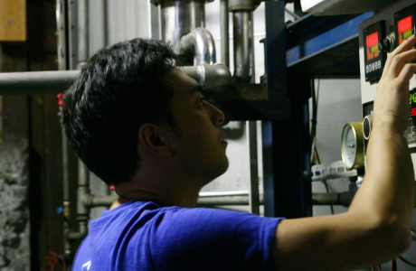

使用酒窖的地下泉水和田野町的
野生酵母作为原料，
结合这片土地的风土自然进行烧酒的酿造。

麹

麴菌是使用河内源一郎商店里的白麴和黑麴。
有关酒麴制造，本酒造场所使用的河内源一郎商店里的白麴和黑麴几乎成为烧酒所用麴的代名词。地处南九州的宫崎县四季温和的气候，本就非常适合麴菌的生长。
水

酿酒用的水都采自于酒窖自宅的泉水井内。这里的井水是鳄塚山山脉地下泉水。
制作烧酒所用之水非常重要，渡边酒造场在酒窖之内有地下泉水井，从那里汲取鳄塚山山脉地下泉水作为原料。『旭萬年』『旭万年』之所以能拥有浓郁的香气和浓厚的口感，都离不开地下泉水。
醪

第二道工序是在醪糟与蒸过之后的甘薯中加水，进行再次发酵。

第二道工序是在醪糟与蒸过之后的甘薯中加水，进行再次发酵。
大约10日即可进行蒸馏。
使用麴米、天然水和酒窖保留的酵母一起制造生酛，再加上刚收获蒸熟的甘薯和少量天然水，制作酒糟。本酒窖在经过10天左右的发酵期之后进入蒸馏工序。酒窖的酿酒人废寝忘食，轮班进行温度管理，在酿酒过程中重复着这样的日子。

为了能发挥天然酵母的效用，搅拌棒等工具也都使用酒窖周围的天然树木和竹子制作。
制酒原料也是自家种植，而各种制酒道具也都是酒窖员工亲手制作。采集酒窖周围天然生长的竹子和树木，制造出各种道具。为的是混入在木材上附着的天然酵母微生物，更能酿造出当地美酒的味道。
蒸

创业百年以来，
创业百年以来，
渡边酒造场坚持沿用常压蒸馏的传统制法。
沿用常压蒸馏的传统工艺，是渡边酒造场百年不变的信条。虽然之前减压蒸馏法所酿造的烧酒风靡一时，但是以浓厚的口味和风格著称『旭萬年』依然屹立不倒，坚持使用常压蒸馏法。为了守护渡边酒造场最正宗的味道，历经四代人，现在的第四代社长依然遵循着这个信条。

最后的一道工序是蒸馏，
最后的一道工序是蒸馏，
加倍细心地监督整个蒸馏过程。
为了看准原料的甘薯变成酒精的瞬间，蒸馏这一道工序是一分一秒也不能分心的连续作业。因为即使看错一点也会改变酒的质量，前功尽弃，所以更要加倍细心呵护。以第四代社长为首的兄弟四人，日夜更替，聚集在蒸馏机周围，倾尽全力监督蒸馏过程。
精


精心培育的甘薯，转生为烧酒的瞬间。移动到储藏罐内，稍作歇息等待装瓶。
亲自种植培育的甘薯变成烧酒喷射而出，这是制酒人最为幸福的瞬间。撇去最低限度的表面油脂，烧酒装入到储藏罐中储藏，在装瓶销售之前小睡片刻。